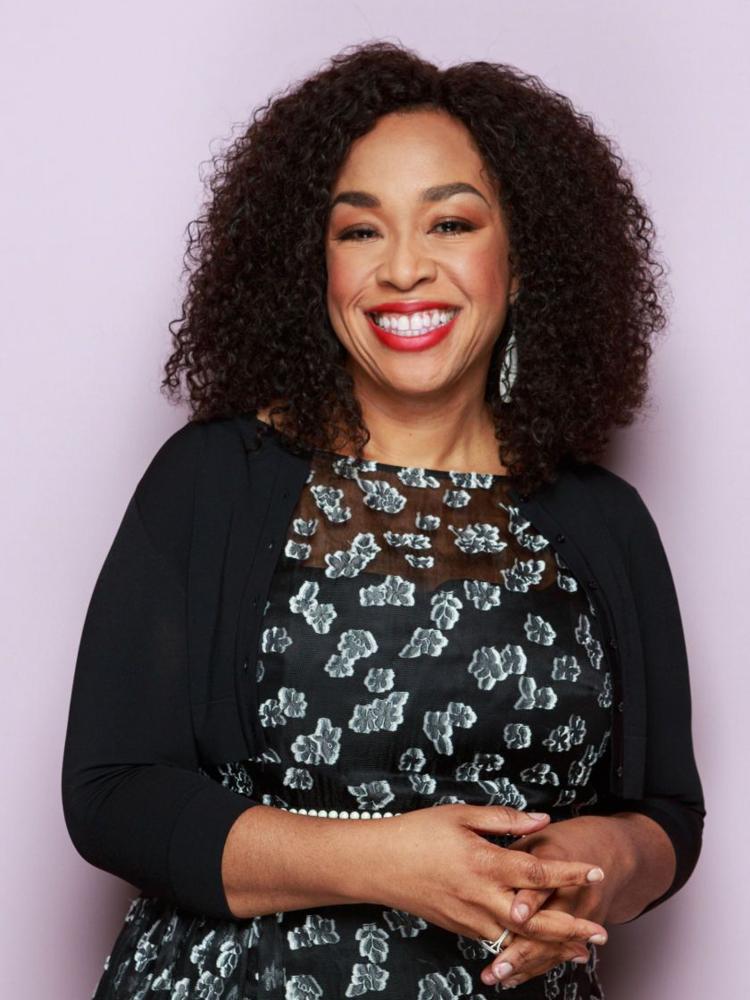

Sinopsis de la serie
Grey's Anatomy es una serie estadounidense creada por Shonda Rhimes. Comenzó a emitirse el 27 de marzo de 2005 en Estados Unidos a través de la cadena ABC.
Es una serie de drama médico que sigue las vidas de los cirujanos internos, residentes y especialistas a medida que se convierten en médicos cirujanos experimentados mientras tratan de equilibrar sus relaciones personales y profesionales. Centrado en el ficticio hospital Grey Sloan Memorial, ubicado en Seattle, inicialmente llamado el "Hospital Grace de Seattle". A pesar de contar con varios personajes principales, el personaje central y titular es la doctora Meredith Grey, que también es la narradora principal del programa.

Creadora de la serie

Shonda Rhimes es una de las productoras, guionistas y creadoras más influyentes de la televisión contemporánea, mundialmente. Es la mente creativa detrás de éxitos masivos y de larga duración como Grey's Anatomy, Scandal y Private Practice, además de producir fenómenos globales recientes en Netflix como Bridgerton e Inventing Anna.
Reconocida por su habilidad para construir dramas adictivos y personajes complejos con una gran diversidad y representación en pantalla, Rhimes hizo historia al convertirse en la primera mujer en crear tres series de televisión que superaron los 100 episodios cada una, consolidándose como un verdadero ícono de la cultura pop y los medios de comunicación modernos.